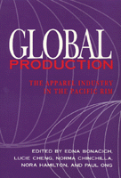

Pacific Rim scholars look at globalization's impact on international economics
Pacific Rim scholars look at globalization's impact on international economics


 Pacific Rim scholars look at globalization's impact on international economics
Pacific Rim scholars look at globalization's impact on international economics

|  |
Global ProductionThe Apparel Industry in the Pacific Rimedited by Edna Bonacich, Lucie Cheng, Norma Chinchilla, Nora Hamilton and Paul Ongpaper EAN: 978-1-56639-169-6 (ISBN: 1-56639-169-5) |
"An excellent and often impressive book that advances our understanding of the internationalization of production and the ways in which it is actually implemented in specific sites."
—Saskia Sassen, Department of Urban Planning, Columbia University
This collection of original essays examines the social and political consequences of the globalization of the apparel industry in Asia, Mexico, Central America, the Caribbean, and the United States. The contributors analyze the countries' trade policies, the apparel industry's network of capital ad labor, working conditions in garment factories, and the role of workers, especially women. Written by scholars of various nationalities and from different disciplines, this volume provides a look at the industry from the perspective of participants within each country and illustrates a general trend toward the internationalization of production and global economic restructuring.
Excerpt available at www.temple.edu/tempress
"[C]ontains an impressive array of good case studies on a variety of regions and countries, with special focus on how the United States apparel industry relates to globalization in each case."
—Journal of American Ethnic History
Acknowledgments
1. Introduction: The Garment Industry in the Restructuring Global Economy – Edna Bonacich, Lucie Cheng, Norma Chinchilla, Nora Hamilton, and Paul Ong
Part I: Patterns and Linkages
2. Mapping a Global Industry: Apparel Production in the Pacific Rim Triangle – Edna Bonacich and David V. Waller
3. Power and Profits in the Apparel Commodity Chain – Richard P. Appelbaum and Gary Gereffi
4. U.S. Retailers and Asian Garment Production – Lucie Cheng and Gary Gereffi
5. The Role of U.S. Apparel Manufacturers in the Globalization of the Industry in the Pacific Rim – Edna Bonacich and David V. Waller
Part II: Asia
6. The Development Process of the Hong Kong Garment Industry: A Mature Industry in a Newly Industrialized Economy – Ho-Fuk Lau and Chi-Fai Chan
7. The Globalization of Taiwan's Garment Industry – Gary Gereffi and Mei-Lin Pan
8. The Korean Garment Industry: From Authoritarian Patriarchism to Industrial Paternalism – Seung Hoon Lee and Ho Keun Song
9. The Philippine Garment Industry – Rosalinda Pineda Ofreneo
10. Thailand in the Pacific Rim Garment Industry – Richard F. Doner and Ansil Ramsay
11. The Garment Industry in Singapore: Clothes for the Emperor – Sara U. Douglas, Stephen A. Douglas and Thomas J. Finn
Part III: Mexico, Central America, and the Caribbean
12. The Apparel Maquiladora Industry at the Mexican Border – Jorge Carillo V.
13. Industrial Organization and Mexico-U.S. Free Trade: Evidence from the Mexican Garment Industry – Gordon H. Hanson
14. Export Manufacturing, State Policy, and Women Workers in the Dominican Republic – Helen I. Safa
15. The Maquila Revolution in Guatemala – Kurt Petersen
16. The Garment Industry and Economic Restructuring in Mexico and Central America – Norma Chinchilla and Nora Hamilton
Part IV: The United States
17. Labor Squeeze and Ethnic/Racial Recomposition in the U.S. Apparel Industry – Evelyn Blumenberg and Paul Ong
18. Recent Manufacturing Changes in the U.S. Apparel Industry: The Case of North Carolina – Ian M. Taplin
19. Immigrant Enterprise and Labor in the Los Angeles Garment Industry – James Loucky, Maria Soldatenko, Gregory Scott, and Edna Bonacich
20. Conclusion: The Garment Industry, National Development, and Labor Organizing – Edna Bonacich, Lucie Cheng, Norma Chinchilla, Nora Hamilton, and Paul Ong
List of Contributors
Index
Edna Bonacich is Professor of Sociology and Ethnic Studies at the University of California, Riverside.
Lucie Cheng is Professor of Sociology at the University of California, Los Angeles, and visiting Professor of Urban Studies at National Taiwan University, Taipei.
Norma Chinchilla is Professor of Sociology and Director of program in Women's Studies at California State University, Long Beach.
Nora Hamilton is Associate Professor of Political Science at the University of Southern California, Los Angeles.
Paul Ong is Associate Professor in the Graduate School of Architecture and Urban Planning at the University of California, Los Angeles.
Paul Ong, Edna Bonacich, and Lucie Cheng have also co-edited The New Asian Immigration in Los Angeles and Global Restructuring (Temple).
Contributors: David V. Waller, Richard P. Appelbaum, Gary Gereffi, Ho-Fuk Lau, Chi-Fai Chan, Mei-Lin Pan, Seung Hoon Lee, Ho Keun Song, Rosalinda Pineda Ofreneo, Richard F. Doner, Ansil Ramsay, Sara U. Douglas, Stephen A. Douglas, Thomas J. Finn, Gordon H. Hanson, Helen I. Safa, Kurt Petersen, Evelyn Blumenberg, Ian M. Taplin, James Loucky, Maria Soldatenko, Gregory Scott, and the editors.
Labor Studies and Work
Asian Studies
Sociology
© 2015 Temple University. All Rights Reserved. This page: http://www.temple.edu/tempress/titles/1027_reg.html.